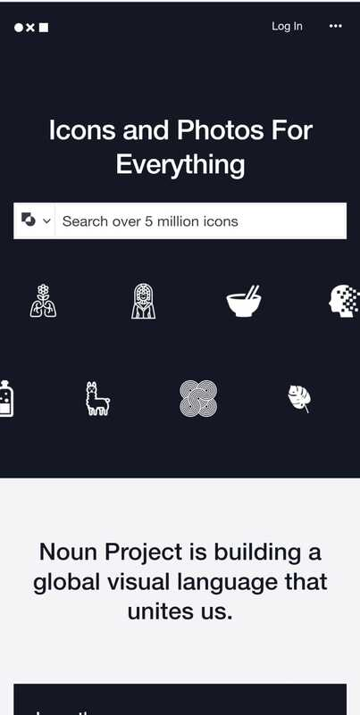
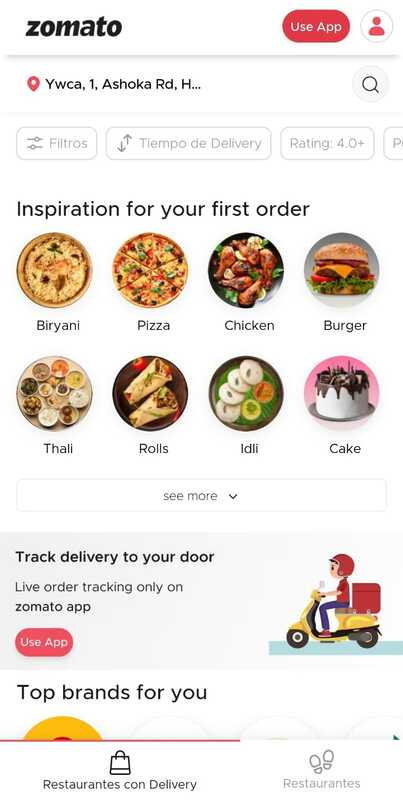

Visual Hierarchy
The Noun Project
thenounproject.com In this page example we can notice the good design to create the visual hierarchy, it is using the type of contrast. Designers often use this type of design with contrast to indicate hierarchy to signal the importance of a special font. For the example given, our view goes first to the search field, not only because it is so big, but also because it has a white color that contrasts with the black background it has. This leads to a user starting to search for something on the page. Then, the eye goes to the icons that are below the search field which gives us the type of results that the page will give us.
Rule of Thirds
HubSpot
hubspot.comThe rule of thirds arose to segment an image or design into sections such as rows or columns that constitute a grid. The example given is using the principle of the rule of thirds. Most users always put their attention on the left side of their screen, in this case HubSpot makes good use of the law of thirds to be able to draw attention to the slogan and the action message. "Start free or get a demo." This makes it easy to create user flow. This is a great example of using the rule of thirds.
Hick's Law
Zomato
zomato.com In this page example we can notice the use of Hick's law. Zomato is an online food sales company is one of the largest platforms today. Naturally, designers use this law to improve design efficiency. Zomato in its design offers a range of options, this is in order to reduce our options with food, such as time, offers, cost, etc. It also shows us images of the food so that when the user is browsing they can be attracted by those images. This generates that the user can stay on the website.